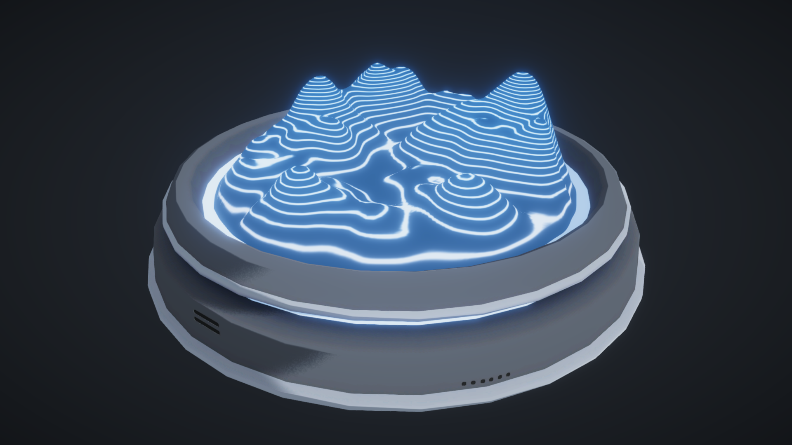

Topographic Map
FEBRUARY 12, 2020

Introduction
This shader replicates the features of a topographic map, which use contour lines to represent the elevation and shape of the terrain. The main components of this effect are the vertex heights and vertically projecting the texture onto the mesh.
Setting Up
The Map
To create the mesh of the map, you can follow any tutorial to generate a terrain mesh. It would be nice for the mesh to have a good variety of big peaks and low valleys so the change in elevation is more obvious. Also, try to make sure it has enough polys to be smooth!
Note: When you import the mesh into Unity, make sure that the mesh is correctly imported so that the Y-axis is pointing up. This is important because our shader will be driven by the Y values of our vertex positions. Also, position the map right above the grid and apply it’s position. This will ensure that the vertex positions of the mesh are all positive.

The Texture
We need to create a texture for the panning lines to project onto the mesh. All we need is a texture with a bunch of horizontal lines that are equally spaced. We will deal with the line spacing with the shader. You could also add a little outer glow around the lines for a glowing effect.